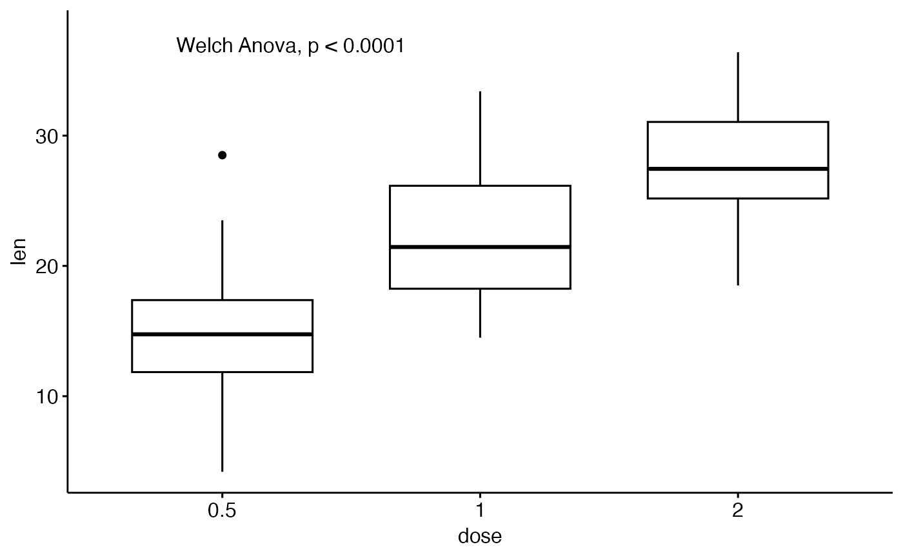
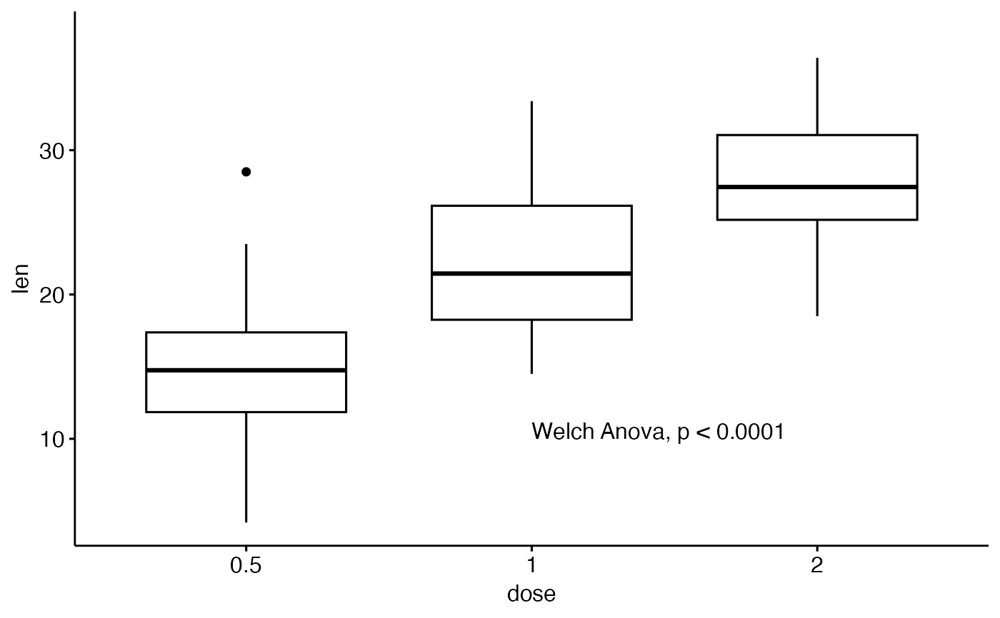
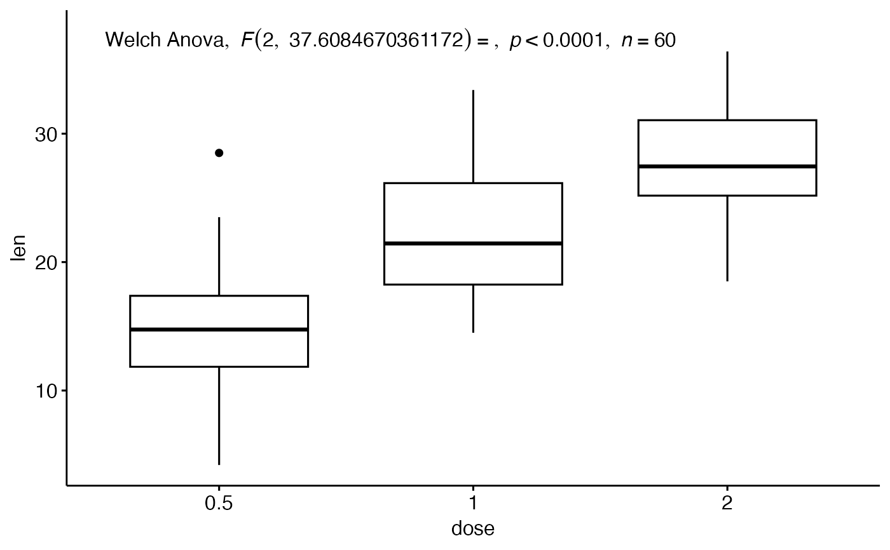
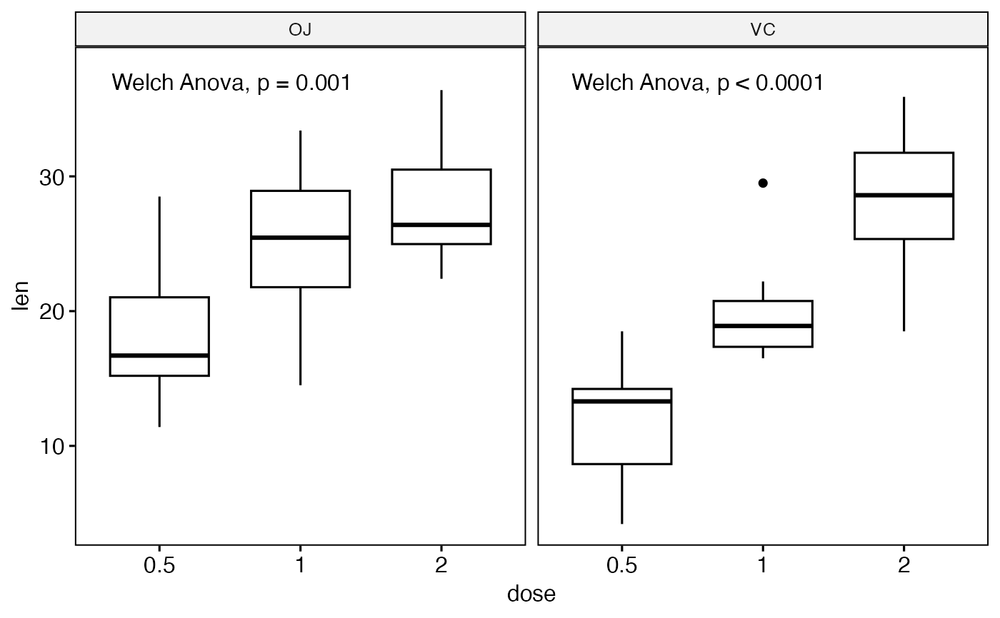
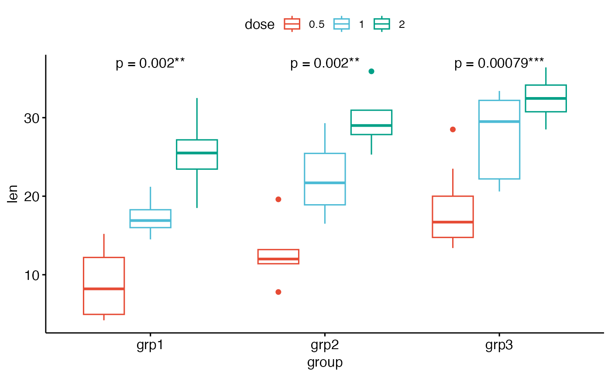
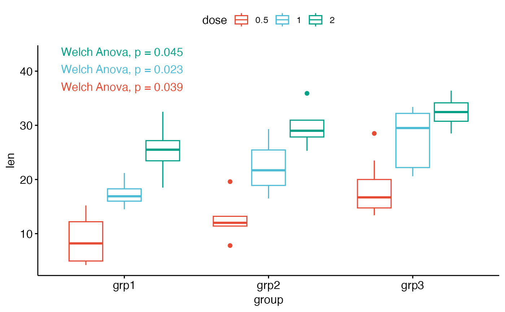
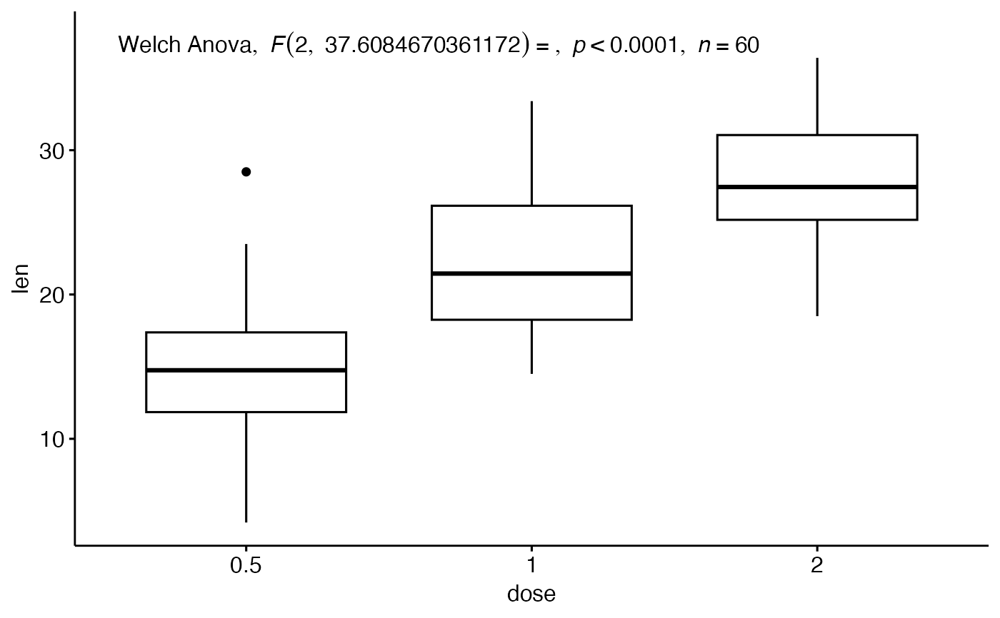
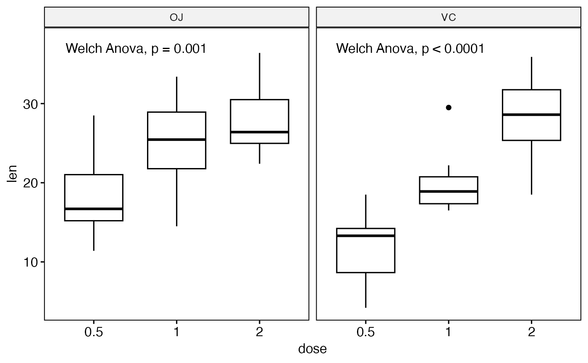
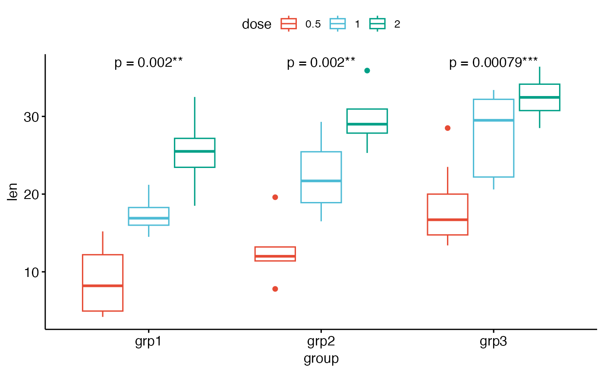
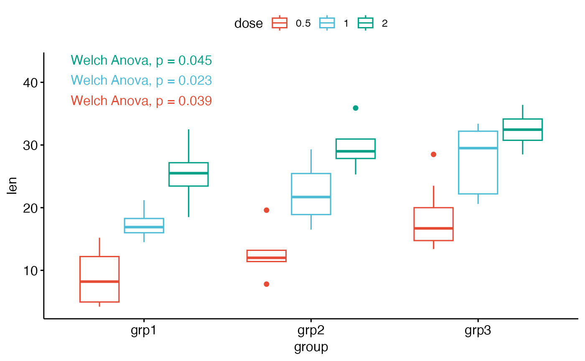

Add Welch One-Way ANOVA Test P-values to a GGPlot
Source:R/stat_welch_anova_test.R
stat_welch_anova_test.RdAdd Welch one-way ANOVA test p-values to a ggplot, such as box blots, dot plots and stripcharts.
Usage
stat_welch_anova_test(
mapping = NULL,
data = NULL,
group.by = NULL,
label = "{method}, p = {p.format}",
label.x.npc = "left",
label.y.npc = "top",
label.x = NULL,
label.y = NULL,
step.increase = 0.1,
p.adjust.method = "holm",
significance = list(),
p.format.style = "default",
p.digits = NULL,
p.leading.zero = NULL,
p.min.threshold = NULL,
p.decimal.mark = NULL,
geom = "text",
position = "identity",
na.rm = FALSE,
show.legend = FALSE,
inherit.aes = TRUE,
parse = FALSE,
...
)Arguments
- mapping
Set of aesthetic mappings created by
aes(). If specified andinherit.aes = TRUE(the default), it is combined with the default mapping at the top level of the plot. You must supplymappingif there is no plot mapping.- data
The data to be displayed in this layer. There are three options:
If
NULL, the default, the data is inherited from the plot data as specified in the call toggplot().A
data.frame, or other object, will override the plot data. All objects will be fortified to produce a data frame. Seefortify()for which variables will be created.A
functionwill be called with a single argument, the plot data. The return value must be adata.frame, and will be used as the layer data. Afunctioncan be created from aformula(e.g.~ head(.x, 10)).- group.by
(optional) character vector specifying the grouping variable; it should be used only for grouped plots. Possible values are :
"x.var": Group by the x-axis variable and perform the test between legend groups. In other words, the p-value is compute between legend groups at each x position"legend.var": Group by the legend variable and perform the test between x-axis groups. In other words, the test is performed between the x-groups for each legend level.
- label
the column containing the label (e.g.: label = "p" or label = "p.adj"), where
pis the p-value. Can be also an expression that can be formatted by theglue()package. For example, when specifying label = "t-test, p = {p}", the expression {p} will be replaced by its value.- label.x.npc, label.y.npc
can be
numericorcharactervector of the same length as the number of groups and/or panels. If too short they will be recycled.If
numeric, value should be between 0 and 1. Coordinates to be used for positioning the label, expressed in "normalized parent coordinates".If
character, allowed values include: i) one of c('right', 'left', 'center', 'centre', 'middle') for x-axis; ii) and one of c( 'bottom', 'top', 'center', 'centre', 'middle') for y-axis.
- label.x, label.y
numericCoordinates (in data units) to be used for absolute positioning of the label. If too short they will be recycled.- step.increase
numeric vector with the increase in fraction of total height for every additional comparison to minimize overlap.
- p.adjust.method
method for adjusting p values (see
p.adjust). Has impact only in a situation, where multiple pairwise tests are performed; or when there are multiple grouping variables. Allowed values include "holm", "hochberg", "hommel", "bonferroni", "BH", "BY", "fdr", "none". If you don't want to adjust the p value (not recommended), use p.adjust.method = "none".- significance
a list of arguments specifying the signifcance cutpoints and symbols. For example,
significance <- list(cutpoints = c(0, 0.0001, 0.001, 0.01, 0.05, Inf), symbols = c("****", "***", "**", "*", "ns")).In other words, we use the following convention for symbols indicating statistical significance:
ns: p > 0.05*: p <= 0.05**: p <= 0.01***: p <= 0.001****: p <= 0.0001
- p.format.style
character string specifying the p-value formatting style. One of:
"default"(backward compatible, uses scientific notation),"apa"(APA style, no leading zero),"nejm"(NEJM style),"lancet"(Lancet style),"ama"(AMA style),"graphpad"(GraphPad style), or"scientific"(scientific notation for GWAS). Seelist_p_format_stylesfor details.- p.digits
integer specifying the number of decimal places for p-values. If provided, overrides the style default.
- p.leading.zero
logical indicating whether to include leading zero before decimal point (e.g., "0.05" vs ".05"). If provided, overrides the style default.
- p.min.threshold
numeric specifying the minimum p-value to display exactly. Values below this threshold are shown as "< threshold". If provided, overrides the style default.
- p.decimal.mark
character string to use as the decimal mark. If NULL, uses
getOption("OutDec").- geom
The geometric object to use to display the data for this layer. When using a
stat_*()function to construct a layer, thegeomargument can be used to override the default coupling between stats and geoms. Thegeomargument accepts the following:A
Geomggproto subclass, for exampleGeomPoint.A string naming the geom. To give the geom as a string, strip the function name of the
geom_prefix. For example, to usegeom_point(), give the geom as"point".For more information and other ways to specify the geom, see the layer geom documentation.
- position
A position adjustment to use on the data for this layer. This can be used in various ways, including to prevent overplotting and improving the display. The
positionargument accepts the following:The result of calling a position function, such as
position_jitter(). This method allows for passing extra arguments to the position.A string naming the position adjustment. To give the position as a string, strip the function name of the
position_prefix. For example, to useposition_jitter(), give the position as"jitter".For more information and other ways to specify the position, see the layer position documentation.
- na.rm
If FALSE (the default), removes missing values with a warning. If TRUE silently removes missing values.
- show.legend
logical. Should this layer be included in the legends?
NA, the default, includes if any aesthetics are mapped.FALSEnever includes, andTRUEalways includes. It can also be a named logical vector to finely select the aesthetics to display. To include legend keys for all levels, even when no data exists, useTRUE. IfNA, all levels are shown in legend, but unobserved levels are omitted.- inherit.aes
If
FALSE(the default for most ggpubr functions), overrides the default aesthetics, rather than combining with them. This is most useful for helper functions that define both data and aesthetics and shouldn't inherit behaviour from the default plot specification. Set toTRUEto inherit aesthetics from the parent ggplot layer.- parse
If TRUE, the labels will be parsed into expressions and displayed as described in
?plotmath.- ...
other arguments passed to the function
geom_bracket()orgeom_text()
Computed variables
statistic: the value of the test statistic (F-value)
DFn: Degrees of Freedom in the numerator (i.e. DF effect)
DFd: Degrees of Freedom in the denominator (i.e., DF error)
p: p-value.
p.adj: Adjusted p-values.
p.signif: P-value significance.
p.adj.signif: Adjusted p-value significance.
p.format: Formated p-value.
p.format.signif: Formated p-value with significance symbols.
p.adj.format: Formated adjusted p-value.
n: number of samples.
Examples
# Data preparation
#%%%%%%%%%%%%%%%%%%%%%%%%%%%%%%%%%%%%%%%%%
# Transform `dose` into factor variable
df <- ToothGrowth
df$dose <- as.factor(df$dose)
# Add a random grouping variable
set.seed(123)
df$group <- sample(factor(rep(c("grp1", "grp2", "grp3"), 20)))
df$len <- ifelse(df$group == "grp2", df$len+2, df$len)
df$len <- ifelse(df$group == "grp3", df$len+7, df$len)
head(df, 3)
#> len supp dose group
#> 1 4.2 VC 0.5 grp1
#> 2 18.5 VC 0.5 grp3
#> 3 14.3 VC 0.5 grp3
# Basic boxplot
#%%%%%%%%%%%%%%%%%%%%%%%%%%%%%%%%%%%%%%%%%
# Create a basic boxplot
# Add 5% and 10% space to the plot bottom and the top, respectively
bxp <- ggboxplot(df, x = "dose", y = "len") +
scale_y_continuous(expand = expansion(mult = c(0.05, 0.1)))
# Add the p-value to the boxplot
bxp + stat_welch_anova_test()

# Change the label position
# Using coordinates in data units
bxp + stat_welch_anova_test(label.x = "1", label.y = 10, hjust = 0)

# Format the p-value differently
custom_p_format <- function(p) {
rstatix::p_format(p, accuracy = 0.0001, digits = 3, leading.zero = FALSE)
}
bxp + stat_welch_anova_test(
label = "Welch Anova, italic(p) = {custom_p_format(p)}{p.signif}"
)
#> Warning: Computation failed in `stat_compare_multiple_means()`.
#> Caused by error in `mutate()`:
#> ℹ In argument: `label = glue(label)`.
#> Caused by error:
#> ! Failed to evaluate glue component {custom_p_format(p)}
#> Caused by error in `custom_p_format()`:
#> ! could not find function "custom_p_format"
 # Show a detailed label in italic
bxp + stat_welch_anova_test(label = "as_detailed_italic")

# Faceted plots
#%%%%%%%%%%%%%%%%%%%%%%%%%%%%%%%%%%%%%%%%%
# Create a ggplot facet
bxp <- ggboxplot(df, x = "dose", y = "len", facet.by = "supp") +
scale_y_continuous(expand = expansion(mult = c(0.05, 0.1)))
# Add p-values
bxp + stat_welch_anova_test()

# Grouped plots
#%%%%%%%%%%%%%%%%%%%%%%%%%%%%%%%%%%%%%%%%%
bxp2 <- ggboxplot(df, x = "group", y = "len", color = "dose", palette = "npg")
# For each x-position, computes tests between legend groups
bxp2 + stat_welch_anova_test(aes(group = dose), label = "p = {p.format}{p.signif}")

# For each legend group, computes tests between x variable groups
bxp2 + stat_welch_anova_test(aes(group = dose, color = dose), group.by = "legend.var")

# Show a detailed label in italic
bxp + stat_welch_anova_test(label = "as_detailed_italic")

# Faceted plots
#%%%%%%%%%%%%%%%%%%%%%%%%%%%%%%%%%%%%%%%%%
# Create a ggplot facet
bxp <- ggboxplot(df, x = "dose", y = "len", facet.by = "supp") +
scale_y_continuous(expand = expansion(mult = c(0.05, 0.1)))
# Add p-values
bxp + stat_welch_anova_test()

# Grouped plots
#%%%%%%%%%%%%%%%%%%%%%%%%%%%%%%%%%%%%%%%%%
bxp2 <- ggboxplot(df, x = "group", y = "len", color = "dose", palette = "npg")
# For each x-position, computes tests between legend groups
bxp2 + stat_welch_anova_test(aes(group = dose), label = "p = {p.format}{p.signif}")

# For each legend group, computes tests between x variable groups
bxp2 + stat_welch_anova_test(aes(group = dose, color = dose), group.by = "legend.var")
